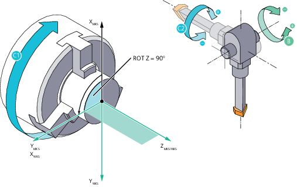
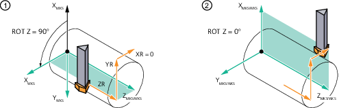

Mit der Funktion Y-Drehen werden Y-Drehwerkzeuge unterstützt. Bei Y-Drehwerkzeugen wirkt der Schnittdruck nicht seitlich, sondern senkrecht auf den Halter. Hierdurch lässt sich ein bis zu dreifach höherer Bearbeitungsvorschub erzielen. Diese Technologie ermöglicht jedoch nur Außenbearbeitungen.
| | Software-Option Um die Funktion "Y-Drehen" zu nutzen, benötigen Sie die Software-Option "Drehbearbeitung mit der Y-Achse". |
| Hinweis |
Die Funktion "Y-Drehen" kann nur aktiviert werden, wenn unter MD52200 $MCS_TECHNOLOGY = 1 (Drehen) eingestellt ist. |
Wenn Y-Drehen frei gegeben ist, kann mit dem CYCLE805 das Y-Drehwerkzeug für die Drehbearbeitung ausgerichtet werden. Im Gegensatz zum "Ausrichten Drehwerkzeug" wird beim Y-Drehen das WKS in Z um - 90° (Arbeitsbereich 1) oder + 90° (Arbeitsbereich 2) gedreht (MD $MCS_FUNCTION _MASK_TURN), um die Bearbeitung durchführen zu können. Das ermöglicht eine Programmierung der Drehbearbeitung in der G18-Ebene (ZX). Mit dem NC-Befehl CUTMOD werden die Daten des Werkzeuges online auf Basis der Werkzeugorientierung berechnet. Die Berechnung betrifft die Schneidenlage, den Halterwinkel und die Schnittrichtung.
Y-Drehen im Arbeitsbereich 2 (WKS-Rotation um Z: +90°)
Die Bearbeitung bei aktivem Y-Drehen findet immer in der Ebene G18 statt.
Anlegen eines Y-Drehwerkzeugs mit drei Schneiden
Es werden drei Schneiden mit unterschiedlichen Einspannwinkeln definiert:
D1: Länge Y 10.000, Länge Z 125.000, Radius 0.800, Einspannwinkel = -90° - 112,5° = -202,5°
D2: Länge Y 10.000, Länge Z 125.000, Radius 0.800, Einspannwinkel = -90° + 112,5° = 22,5°
D3: Länge Y 15.000, Länge Z 125.000, Radius 0.800, Einspannwinkel = -90°
D1 | D2 | D3 | |
① | Bezugsrichtung | Bezugsrichtung | Bezugsrichtung |
② | Halterwinkel (= 50°) | Halterwinkel (= 50°) | Halterwinkel (= 62,5°) |
③ | Plattenwinkel (= 80°) | Plattenwinkel (= 80°) | Plattenwinkel (= 55°) |
④ | Einspannwinkel (= -90° - 112,5° = -202,5°) | Einspannwinkel (= -90° + 112,5° = 22,5°) | Einspannwinkel (= -90°) |
| Hinweis |
Alternativ kann das Y-Drehwerkzeug über ein Multitool angelegt werden. Hierbei bleibt der Einspannwinkel 0° und die Verdrehung wird über den Multitoolwinkel definiert. Der Einspannwinkel wird im Fenster "Weitere Daten - ..." eingegeben. |
Definition des Winkels γ und der B-Achsposition
Für das Ausrichten von Y-Drehwerkzeugen wird die B-Achsposition und der Winkel Gamma verwendet. Gamma ist dabei auf das WKS bezogen.
Die Definition des Winkels Gamma ist maschinenunabhängig. Im Gegensatz dazu ist die B-Achsposition maschinenabhängig und wird über $MCS_Y_TURN_SWIVEL_ANGLE vom Maschinenhersteller eingestellt.
Weitere Informationen zum Thema Scheidenlagen finden Sie im Funktionshandbuch Werkzeuge unter "Modifikationen bei der Drehung von Drehwerkzeugen".
Spiegelung (Bearbeitung an der Gegenspindel)
Eine Spiegelung der Z-Achse (z. B. auf der Gegenspindel) führt zu der gleichen Bearbeitung im gespiegelten Koordinatensystem. Der CYCLE805 berechnet intern γ, sodass die gleiche Schneidenlage folgt wie im ungespiegelten Koordinatensystem.
Die Spiegelung der Z-Achse muss permanent in einer Nullpunktverschiebung aktiviert sein.
Arbeitsbereich
Wenn die Funktion "Y-Drehen: WKS-Rotation in der Eingabemaske wählbar" vom Maschinenhersteller eingestellt wurde, ist ein Wechseln zwischen den Arbeitsbereichen in der Bedienmaske möglich.
Ein Wechseln zwischen den Arbeitsbereichen führt zu der gleichen Bearbeitung im gedrehten Koordinatensystem. Der CYCLE805 berechnet intern γ, sodass die gleiche Schneidendlage folgt wie im Grund-Arbeitsbereich (MD $MCS_FUNCTION _MASK_TURN).
Die Definition des Arbeitsbereichs wird über MD $MCS_FUNCTION _MASK_TURN vom Maschinenhersteller eingestellt.
Startpunktposition oder Freifahrposition anfahren
Bei der Anwahl des Y-Drehens kann mit der Auswahl "Startpunkt = ja" ein Startpunkt für die weitere Bearbeitung angegeben werden. Die 3 Werte ZS, XS und YS werden im Koordinatensystem für das Y-Drehen in dieser Reihenfolge angefahren. YS ist immer 0, als Vorbereitung für die Drehbearbeitung. Bei der Auswahl "Startpunkt = nein" müssen Sie selbst für einen geeigneten Startpunkt (inkl. Y=0) für nachfolgende Drehzyklen sorgen.

① | Vor der Anwahl Y-Drehen mit "Startpunkt = ja" |
② | Startpunkt |
Beim Abwählen des Y-Drehens kann mit der Auswahl "Freifahren = ja" ein Punkt angegeben werden, auf dem keine Kollisionsgefahr für die weitere Bearbeitung besteht. Die 3 Werte ZR, XR und YR werden im Koordinatensystem für das Y-Drehen in der angegebenen Reihenfolge angefahren. Danach wird das WKS wieder um Z +/-90° zurückgedreht. Bei der Auswahl "Freifahren = nein" sind Sie selbst für die weiteren Verfahrbewegungen verantwortlich.
① | Am Ende der Bearbeitung vor Abwahl |
② | Nach Abwahl mit Freifahren |
Zyklen für Y-Drehen
Sie können die folgenden Standardzyklen für Y-Drehen verwenden:
Abspanen (CYCLE951), (CYCLE952): Konturabspanen nur außen vorne und außen hinten, Konturstechen: nur längs außen
Einstich (CYCLE930), nur längs außen
Freistich (CYCLE940), nur außen
Abstich (CYCLE92)
Konturdrehen (CYCLE951), längs außen, konturparallel außen
Die gleichen Drehbearbeitungen können Sie auch unter ShopTurn verwenden.